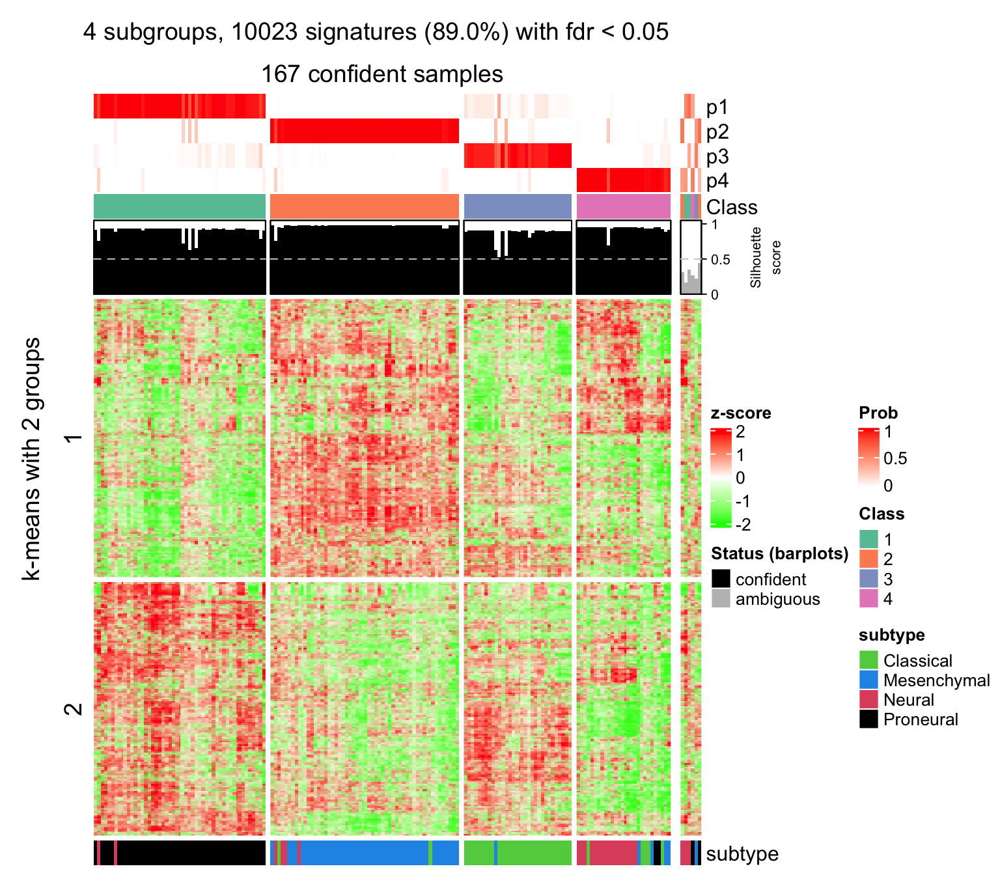
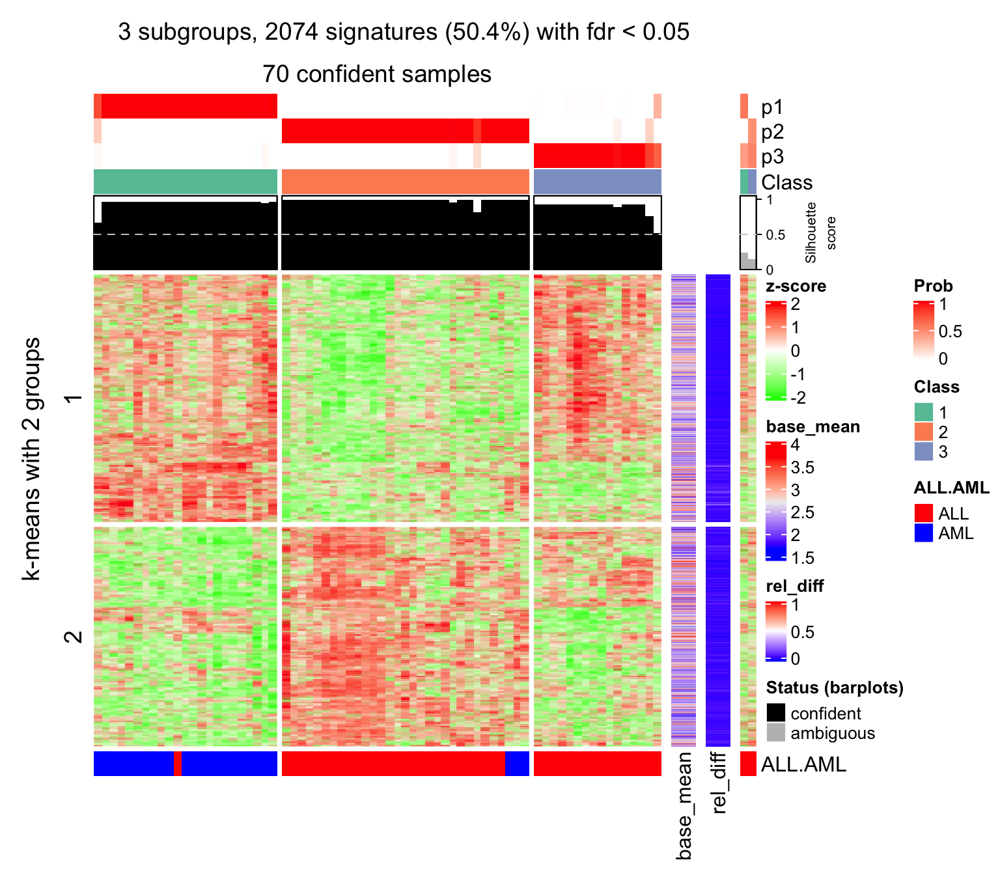

vignettes/functional_enrichment.Rmd
functional_enrichment.RmdAuthor: Zuguang Gu ( z.gu@dkfz.de )
Date: 2019-12-26
Package version: 1.3.2
If the matrix rows can correspond to genes (e.g. the gene expression matrix, or the methylation array data where CpG sites can be annotated to the transcription start site of genes), cola performs functional enrichment by the functional_enrichment() function to the signatures by ClusterProfiler, DOSE or ReactomePA packages.
We first demonstrate the usage of functional_enrichment() function by the TCGA GBM dataset. In following example code, TCGA_GBM_subgroup.rds is generated by the code demonstrated here. We download the result file that has already been generated.
download.file("https://jokergoo.github.io/cola_examples/TCGA_GBM/TCGA_GBM_subgroup.rds",
destfile = "TCGA_GBM_subgroup.rds", quiet = TRUE)
rl = readRDS("TCGA_GBM_subgroup.rds")
file.remove("TCGA_GBM_subgroup.rds")We select result from a single method ATC:skmeans:
library(cola)
res = rl["ATC:skmeans"]
res## A 'ConsensusPartition' object with k = 2, 3, 4, 5, 6.
## On a matrix with 11268 rows and 173 columns.
## Top rows (1000, 2000, 3000, 4000, 5000) are extracted by 'ATC' method.
## Subgroups are detected by 'skmeans' method.
## Performed in total 1250 partitions by row resampling.
## Best k for subgroups seems to be 4.
##
## Following methods can be applied to this 'ConsensusPartition' object:
## [1] "cola_report" "collect_classes" "collect_plots"
## [4] "collect_stats" "colnames" "compare_signatures"
## [7] "consensus_heatmap" "dimension_reduction" "functional_enrichment"
## [10] "get_anno_col" "get_anno" "get_classes"
## [13] "get_consensus" "get_matrix" "get_membership"
## [16] "get_param" "get_signatures" "get_stats"
## [19] "is_best_k" "is_stable_k" "membership_heatmap"
## [22] "ncol" "nrow" "plot_ecdf"
## [25] "rownames" "select_partition_number" "show"
## [28] "suggest_best_k" "test_to_known_factors"We check how the signature genes looks like under 4-group classification:
set.seed(123)
get_signatures(res, k = 4)## * 167/173 samples (in 4 classes) remain after filtering by silhouette (>= 0.5).
## * cache hash: eef958f7cb17f1f44dd5ec01d14dd902 (seed 888).
## * calculating row difference between subgroups by Ftest.
## * split rows into 4 groups by k-means clustering.
## * 10023 signatures (89.0%) under fdr < 0.05, group_diff > 0.
## - randomly sample 2000 signatures.
## * making heatmaps for signatures.
Rows are split into four groups with different expression patterns among samples. The functional enrichment will be applied to genes in each row-cluster.
To apply functional enrichment, the important thing is to check the gene ID type in the input matrix. The helper function rownames() directly returns the row names of the matrix stored in res.
## [1] "AACS" "FSTL1" "ELMO2" "CREB3L1" "RPS11" "PNMA1"The gene ID is symbol. For all enrichment analysis provided by ClusterProfiler, DOSE or ReactomePA, the core ID type is Entrez ID, thus we need to convert from symbol to Entrez ID.
To make it easy, cola automatically tests the gene IDs types and it automatically recognizes three ID types of Ensembl ID, RefSeq ID and gene symbol, which covers most cases of the analysis. If user’s gene ID type is one of the three supported ones, simply run functional_enrichment() on res only with specifying the number of subgroups.
lt = functional_enrichment(res, k = 4)By default, functional_enrichment() runs enrichment on Gene Ontology, biological function ontologies. ontology can be set as follows:
BP/MF/CC, org_db argument should be set to the corresponding database, such as "org.Hs.eg.db",KEGG, organism argument should be set to corresponding species abbreviation, such as "hsa",DO, only works for human,MSigDb, only works for human, the path of gmt file should be specified by gmt_file argument. You should only use the gmt files where genes are annotated with the Entrez IDs.Reactome, organism argument should be set to the corresponding species, such as "human".ontology can be set as a vector of multiple ontologies.
The value of lt is a list of data frames for different ontologies combined with different k-means groups. Since k-means clustering has already been applied in previous get_signatures(), the k-means clustering result is stored in res object and functional_enrichment() directly uses the classification from it.
names(lt)## [1] "BP_km1" "BP_km2" "BP_km3" "BP_km4"head(lt[[1]])## ID Description GeneRatio BgRatio pvalue
## GO:0010469 GO:0010469 regulation of signaling receptor activity 116/1443 588/17913 5.094534e-20
## GO:0008015 GO:0008015 blood circulation 100/1443 523/17913 1.953545e-16
## GO:0003013 GO:0003013 circulatory system process 101/1443 532/17913 2.256348e-16
## GO:0010817 GO:0010817 regulation of hormone levels 95/1443 503/17913 2.560685e-15
## GO:0030855 GO:0030855 epithelial cell differentiation 123/1443 746/17913 8.436502e-15
## GO:0055080 GO:0055080 cation homeostasis 102/1443 588/17913 7.326199e-14
## p.adjust qvalue
## GO:0010469 2.888091e-16 2.279670e-16
## GO:0008015 4.263745e-13 3.365521e-13
## GO:0003013 4.263745e-13 3.365521e-13
## GO:0010817 3.629131e-12 2.864598e-12
## GO:0030855 9.565306e-12 7.550226e-12
## GO:0055080 6.922037e-11 5.463802e-11
## geneID
## GO:0010469 BMP3/CCL19/BUD31/GDF10/CGA/NENF/IL23A/WNT10B/CCL23/SCT/VIP/CALCR/EPO/TNFSF15/CCL17/SHANK1/CRLF1/TNFSF18/MUC4/LY6H/TNFSF9/INSL3/OXT/WNT8B/FGF17/RASGRF1/KL/TNF/CAV3/RAMP3/NTS/XCL1/WNT1/CALCB/AMBN/IFNW1/NTF3/FGF5/INHA/FGF21/IL21/DKKL1/CBLC/IFNA21/AVP/CTF1/ADH7/EDN3/GH2/CSF3/ADRB2/IL3/CCL24/ADRA2B/GRIN1/CACNG3/CSH2/LTA/NRG1/IFNA8/GHRH/GDF3/LEP/CCL22/CRHBP/SHH/THPO/GRIN2A/FGF22/CCL11/IAPP/GRP/IL17B/POMC/IL26/PRLH/CDC42EP2/GREM1/TTR/CCL16/CARTPT/TDGF1/IL11/WNT4/TSHB/TNFSF14/PF4/MLN/BMP6/GDF2/F2/IL13/NRTN/IL19/PPY/TNFSF11/OSGIN1/IL4/CCL1/PHLDA2/REG1A/AGTR2/ADRA2C/FGF20/PSPN/CCL27/BMP4/RLN2/BTC/ADM2/IL2/WNT7A/AGRP/RGS9/EDN2/CSF2
## GO:0008015 CD38/NPR1/CACNB1/DBH/ADRA1A/FXYD2/CMA1/TACR2/SNTA1/CACNA1C/P2RX1/HBB/CASR/HCN4/ATP2B3/EPO/TH/MYL1/S100A1/CACNA2D3/LPA/FGA/CACNA1S/CASQ2/OXT/CSRP3/CAV3/NTS/CALM2/CASQ1/KCNJ12/KCNJ3/FXYD1/HSPB7/AVP/DRD1/MYL4/NFE2/SLC6A4/KEL/ADORA2A/EDN3/KCNG2/SERPINF2/AZU1/RNF207/ADRA2B/CACNG3/KCNK15/RYR2/GSTO1/NTSR1/LEP/MYH6/TACR1/TNNT2/AGER/CYP4F12/PKP2/SOD1/BBS4/P2RX2/ID2/POMC/KCNE1/DRD5/FGB/COL4A3/GLP1R/P2RY2/CTSG/KCNJ4/CARTPT/NOX1/MYL2/IRX5/GPR37L1/RYR1/ADRB1/ATP2A3/FOXC2/MYL3/CYP4F2/TRPV4/SGCD/REN/AGTR2/ADRA2C/SRI/TNNI3/TNNC1/ADRA1B/DES/ATP1A2/ADM2/HTR1B/IL2/EDN2/FXYD3/GRIP2
## GO:0003013 CD38/NPR1/CACNB1/DBH/ADRA1A/FXYD2/CMA1/TACR2/SNTA1/CACNA1C/P2RX1/HBB/CASR/HCN4/ATP2B3/EPO/TH/MYL1/S100A1/CACNA2D3/LPA/FGA/CACNA1S/CASQ2/OXT/CSRP3/CAV3/RAMP3/NTS/CALM2/CASQ1/KCNJ12/KCNJ3/FXYD1/HSPB7/AVP/DRD1/MYL4/NFE2/SLC6A4/KEL/ADORA2A/EDN3/KCNG2/SERPINF2/AZU1/RNF207/ADRA2B/CACNG3/KCNK15/RYR2/GSTO1/NTSR1/LEP/MYH6/TACR1/TNNT2/AGER/CYP4F12/PKP2/SOD1/BBS4/P2RX2/ID2/POMC/KCNE1/DRD5/FGB/COL4A3/GLP1R/P2RY2/CTSG/KCNJ4/CARTPT/NOX1/MYL2/IRX5/GPR37L1/RYR1/ADRB1/ATP2A3/FOXC2/MYL3/CYP4F2/TRPV4/SGCD/REN/AGTR2/ADRA2C/SRI/TNNI3/TNNC1/ADRA1B/DES/ATP1A2/ADM2/HTR1B/IL2/EDN2/FXYD3/GRIP2
## GO:0010817 CD38/TFR2/CYP1A1/CGA/TFAP2B/GFI1/CMA1/TACR2/BAIAP3/CACNA1C/SLC5A7/VIP/CASR/KCNC2/SLC44A4/VSNL1/ALDH1A2/SULT1A1/RDH16/ACHE/DHRS9/HNF1A/FGA/PAX8/CYP26A1/PON3/ARL2/CPLX3/OPRK1/SRD5A2/RDH8/TNF/STAR/GHRHR/INHA/DKKL1/HSD17B6/DIO3/HPN/ADORA2A/EDN3/KCNG2/DUOX1/SULT1E1/SERPINA7/ADRA2B/RAPGEF3/NR1H4/FDXR/HSD17B8/GHRH/CYP11A1/LEP/ISL1/CRHBP/TACR1/SHH/BLK/DIO1/GRP/KLK6/HTR2C/FGB/GLP1R/TTR/CTSG/CARTPT/CFTR/SIRT3/IL11/WNT4/AKR1C3/APOA1/TSHB/CYP3A4/HSD17B2/FOXA2/GCK/BMP6/AKR1C4/CRABP2/GATA3/TNFSF11/PDX1/TRPV4/NR0B2/REN/AGTR2/ADRA2C/CRYM/SRI/DUOX2/RBP4/CYP46A1/DHRS2
## GO:0030855 XDH/CYP1A1/KRT15/HOXB5/UPK1B/DSC1/KRT34/WNT10B/KRT4/PAX6/CLDN3/BARX1/PGR/SH3BP1/KRTAP2-4/PKP3/SLC44A4/KRT13/KRTAP5-9/KRT24/TGM3/SFN/OVOL2/DHRS9/CLDN5/PAX8/GSTM3/RARG/FOXN1/ELF5/PITX3/KRT5/KRT37/PPL/TNF/KRT8/GLI1/TCF15/PDZD7/WNT1/AQP3/KRTAP5-8/WNT11/TST/ELF3/CDX2/MSX2/TBX1/RHCG/EMX1/LHX1/CCNO/UPK3A/RAPGEF3/NRG1/KRT32/GDF3/ETV2/TCF21/SIX2/PKP2/WNT16/KRT86/PROC/SOD1/KRT16/ID2/KRT35/KRT33A/S100A7/SOX17/GREM1/MGMT/ACTL8/KRT14/PRSS8/WNT4/AKR1C3/KRT23/B9D1/KRT1/FOXJ1/RHEB/KRT17/BMP6/GDF2/BFSP2/KRT83/KLK12/RAB25/PAX2/IL13/CDH3/VIL1/GATA3/FOXC2/PDX1/KRT7/KRT19/KRT12/SULT2B1/IVL/EVPL/ROS1/EHF/PKP1/KRT3/HOXB13/SIX3/TGM5/DLX6/WT1/BMP4/SCEL/CRYGB/KRT81/KLK13/DMBT1/WNT7A/SPDEF/SPRR3/TP63/PTCH2
## GO:0055080 CCL19/CD38/EPB42/NPR1/TFR2/TFAP2B/ADRA1A/GPR157/SNCA/CACNA1C/CCL23/TMPRSS3/CALCR/P2RX1/CASR/ATP2B3/EPO/GRIN2C/GPR12/RHAG/SLC26A4/CASQ2/VPS33A/OXT/KL/CSRP3/CAV3/TRPA1/GRM1/RAMP3/CALM2/XCL1/CASQ1/CALCB/AVP/DRD1/KEL/ADORA2A/GCM2/SLC9A7/LCK/EDN3/S100A14/CCKBR/RHCG/GRIN1/UPK3A/CD19/RYR2/ATP12A/GSTO1/SCNN1A/TTPA/NTSR1/XK/CLDN16/TACR1/JPH2/FIS1/CYP4F12/SCNN1B/GRIN2A/ATP6V1F/CCL11/IAPP/SOD1/GPR6/P2RX2/GATA2/ALAS2/CALB1/HTR2C/DRD5/TMPRSS6/GLP1R/MS4A1/CFTR/NOX1/LCN2/FZD9/RYR1/BMP6/GDF2/F2/IL13/TRPC5/PLA2G1B/TNFSF11/CYP4F2/TRPV4/CCL1/REG1A/SGCD/AGTR2/SRI/TNNI3/P2RX5/ATP1A2/HTR1B/IL2/NEDD8/EDN2
## Count
## GO:0010469 116
## GO:0008015 100
## GO:0003013 101
## GO:0010817 95
## GO:0030855 123
## GO:0055080 102If the gene ID type is not any of Ensembl ID, RefSeq ID or gene symbol, user needs to provide a named vector which provides mapping between user’s ID types to Entrez IDs.
In following example we demonstrate how to properly set the ID mapping by the Golub leukemia dataset. The result file is already generated.
download.file("https://jokergoo.github.io/cola_examples/Golub_leukemia/Golub_leukemia_subgroup.rds",
destfile = "Golub_leukemia_subgroup.rds", quiet = TRUE)
rl = readRDS("Golub_leukemia_subgroup.rds")
file.remove("Golub_leukemia_subgroup.rds") To simplify, we only take result from one method:
## [1] "AFFX-BioC-5_at" "AFFX-CreX-3_at" "AFFX-BioDn-3_st" "hum_alu_at" "AFFX-DapX-M_at"
## [6] "AFFX-LysX-3_at"set.seed(123)
get_signatures(res, k = 3)## * 70/72 samples (in 3 classes) remain after filtering by silhouette (>= 0.5).
## * cache hash: f28d6331c7f86199f6c7209c9678af05 (seed 888).
## * calculating row difference between subgroups by Ftest.
## * split rows into 4 groups by k-means clustering.
## * 2074 signatures (50.4%) under fdr < 0.05, group_diff > 0.
## - randomly sample 2000 signatures.
## * making heatmaps for signatures.
The Golub leukemia dataset is a microarray dataset where the gene ID is the probe ID. Thankfully, there is already an annotation package from Bioconductor (hu6800.db) that provides mapping between the probe ID to Entrez ID.
library(hu6800.db)
x = hu6800ENTREZID
mapped_probes = mappedkeys(x)
id_mapping = unlist(as.list(x[mapped_probes]))
head(id_mapping)## A28102_at AB000114_at AB000115_at AB000220_at AB000381_s_at AB000409_at
## "2556" "4958" "10964" "10512" "2765" "8569"Proportion of probe IDs that can be mapped:
## [1] 0.8627308As you see, the format of id_mapping is simple. Names of the vector are the probe IDs and the values are the Entrez IDs. We can directly assign the ID mapping variable to id_mapping argument.
lt = functional_enrichment(res, k = 3, id_mapping = id_mapping)functional_enrichment() can also be applied to two other classes of objects:
ConsensusPartitionList object which is generated by run_all_partition_methods() function. The result is a list (for each method) of lists (for each ontology) of data frames.## R version 3.6.1 (2019-07-05)
## Platform: x86_64-apple-darwin15.6.0 (64-bit)
## Running under: macOS Mojave 10.14.2
##
## Matrix products: default
## BLAS: /Library/Frameworks/R.framework/Versions/3.6/Resources/lib/libRblas.0.dylib
## LAPACK: /Library/Frameworks/R.framework/Versions/3.6/Resources/lib/libRlapack.dylib
##
## locale:
## [1] en_GB.UTF-8/en_GB.UTF-8/en_GB.UTF-8/C/en_GB.UTF-8/en_GB.UTF-8
##
## attached base packages:
## [1] parallel stats4 stats graphics grDevices utils datasets methods base
##
## other attached packages:
## [1] hu6800.db_3.2.3 org.Hs.eg.db_3.8.2 AnnotationDbi_1.46.1 IRanges_2.18.3
## [5] S4Vectors_0.22.1 Biobase_2.44.0 BiocGenerics_0.30.0 cola_1.3.2
## [9] knitr_1.26 markdown_1.1
##
## loaded via a namespace (and not attached):
## [1] mclust_5.4.5 Rcpp_1.0.3 lattice_0.20-38 circlize_0.4.9
## [5] png_0.1-7 assertthat_0.2.1 zeallot_0.1.0 rprojroot_1.3-2
## [9] digest_0.6.23 slam_0.1-46 R6_2.4.1 backports_1.1.5
## [13] RSQLite_2.1.4 evaluate_0.14 httr_1.4.1 pillar_1.4.2
## [17] GlobalOptions_0.1.2 rlang_0.4.2 annotate_1.62.0 blob_1.2.0
## [21] GetoptLong_0.1.7 Matrix_1.2-18 rmarkdown_2.0 pkgdown_1.4.1
## [25] splines_3.6.1 desc_1.2.0 stringr_1.4.0 RCurl_1.95-4.12
## [29] bit_1.1-14 compiler_3.6.1 eulerr_6.0.0 xfun_0.11
## [33] pkgconfig_2.0.3 microbenchmark_1.4-7 shape_1.4.4 htmltools_0.4.0
## [37] tibble_2.1.3 matrixStats_0.55.0 XML_3.98-1.20 crayon_1.3.4
## [41] MASS_7.3-51.4 bitops_1.0-6 grid_3.6.1 xtable_1.8-4
## [45] DBI_1.1.0 magrittr_1.5 skmeans_0.2-11 stringi_1.4.3
## [49] impute_1.58.0 genefilter_1.66.0 fs_1.3.1 xml2_1.2.2
## [53] brew_1.0-6 vctrs_0.2.0 rjson_0.2.20 RColorBrewer_1.1-2
## [57] tools_3.6.1 bit64_0.9-7 survival_3.1-8 clue_0.3-57
## [61] colorspace_1.4-1 cluster_2.1.0 ComplexHeatmap_2.1.2 memoise_1.1.0